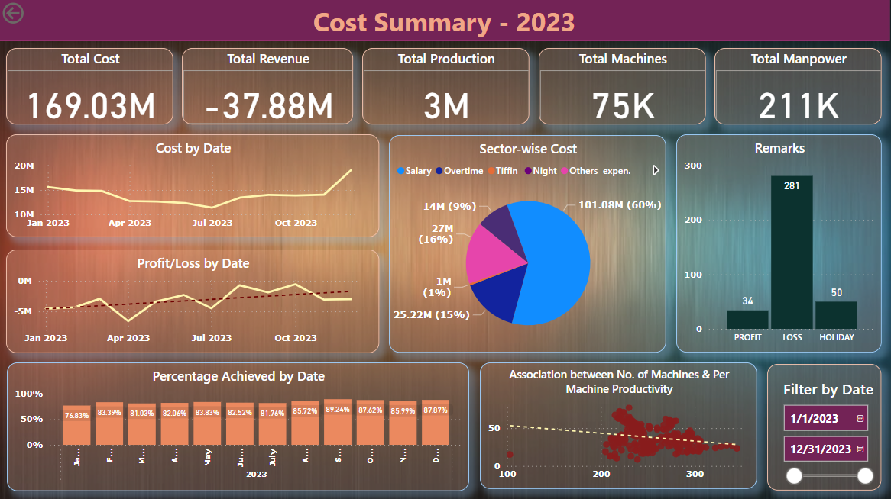
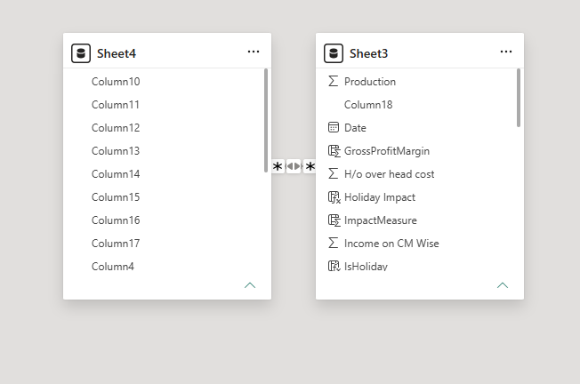
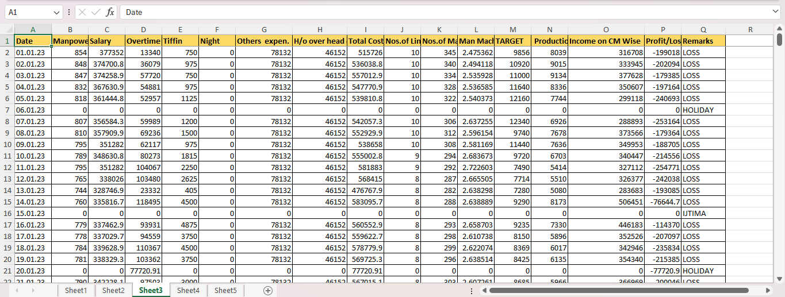
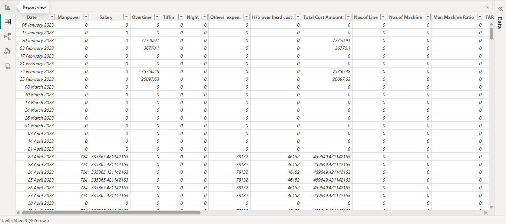
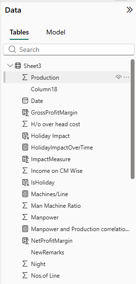
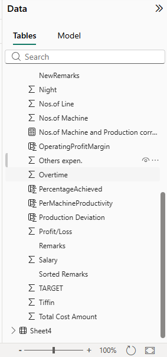

Garment Factory Cost Analysis
An interactive cost summary dashboard for exploring garment production costs and key financial indicators.

Project Overview
This Power BI dashboard brings together factory cost, production, manpower, machine-related indicators and target-achievement measures for 2023. It presents an interactive overview of operational and financial performance, with time-based trends, cost composition, categorical remarks and an exploratory machine-productivity view.
Project Objectives
- Monitor aggregated cost and financial indicators over the reporting period.
- Explore cost patterns and expense-category composition.
- Review production output and target achievement across months.
- Examine operational remarks and machine-related productivity patterns.
- Provide a date-filtered overview for focused exploration.
Dashboard Overview
The dashboard combines headline KPI cards with cost and Profit/Loss trend charts, sector-wise cost distribution, operational remarks, monthly achievement percentages and a scatter plot examining the relationship between machine count and per-machine productivity.
Key Performance Indicators
Five KPI cards provide a high-level snapshot of the measures displayed in the report. The precise calculation and aggregation definitions for some headline figures are not visible in the screenshots; they are therefore presented as displayed dashboard values.
Cost Analysis
Cost by Date
The time-series chart shows cost fluctuations across 2023. Visually, the plotted series declines through the first half of the year, reaches a lower point around mid-year, and rises during the second half, with a pronounced increase toward December. The trend can help identify periods for further cost investigation.
Sector-wise Cost
The pie chart shows the cost mix across Salary, Others Expense, Night, Overtime and Tiffin. Salary is the largest displayed category at approximately 101.08M (60%). Others Expense is shown at about 27M (16%), Night at 25.22M (15%), Overtime at 14M (9%) and Tiffin at 1M (1%). Labels are rounded as displayed in the dashboard.
The displayed distribution highlights salary as the dominant expense category, making manpower-related expenditure an important area for further analysis.
Profit/Loss Trend
The Profit/Loss by Date line chart shows predominantly negative plotted values with fluctuations across the year. The dashboard provides a way to locate periods of comparatively stronger or weaker displayed performance and investigate them alongside production and cost measures. The underlying measure definition is not independently verified from the screenshots.
Operational Remarks
The remarks chart categorizes observations into Profit, Loss and Holiday:
Loss is the largest displayed category. These classifications are interpreted as dashboard categories; the classification logic and whether they represent distinct days or records should be verified against the source measure.
Production Target Achievement
The monthly achievement chart compares the PercentageAchieved measure across 2023. The values visible in the dashboard are:
| Month | Achievement |
|---|---|
| January | 76.83% |
| February | 83.39% |
| March | 81.03% |
| April | 82.06% |
| May | 83.83% |
| June | 82.52% |
| July | 81.76% |
| August | 85.72% |
| September | 89.24% |
| October | 87.62% |
| November | 85.99% |
| December | 87.87% |
September records the highest displayed achievement (89.24%), while January is lowest (76.83%). Achievement is comparatively stronger in the later months than at the beginning of the year.
Machine Productivity Analysis
The scatter plot titled “Association between No. of Machines & Per Machine Productivity” explores two numerical measures. The visible fitted line slopes slightly downward, suggesting a possible negative association in the plotted observations. This visual pattern alone does not establish causality or statistical significance.
The chart can be used as an exploratory starting point for examining how productivity varies across machine-count observations and for considering other operational factors that may influence the pattern.
Data Structure & Model
The screenshots show a daily operational table with financial, production, manpower, machine, date and classification fields, alongside a second table containing Date, Cost and Sectors. A relationship between the two tables is visible in the Power BI model. The precise relationship configuration and transformation history are not confirmed.



Fields & Analytical Measures
The visible field pane includes measures and fields related to production, profitability, costs, holidays, target achievement and machine productivity. Their names indicate the breadth of the dashboard's analytical structure, although formula details are not supplied.


Date Filtering & Interactivity
The report includes a date slicer with a start and end date and slider. The visible selection spans 1 January to 31 December 2023. The slicer provides date-range filtering for the report; individual visual interactions have not been independently tested.
Tools & Visualization Capabilities
- Microsoft Power BI: dashboard design, interactive visuals and data-model presentation.
- Microsoft Excel: visible source data structure and daily records.
- Measures and calculations: the field pane contains analytical and calculated measures; formula details were not supplied.
- Visualizations: KPI cards, line charts, pie chart, bar chart, scatter plot and date slicer.
Key Insights
- Salary is the largest category in the displayed cost composition, at approximately 60%.
- The cost trend visibly declines around the first half and rises in the latter part of the year.
- The displayed Profit/Loss trend is predominantly negative, subject to the measure's definition.
- September has the highest visible monthly achievement at 89.24%; January is lowest at 76.83%.
- Loss is the most frequent displayed remarks category.
- The machine-productivity scatter plot shows a slightly downward-sloping fitted line; this is exploratory, not causal evidence.
Interpretation & Authenticity Note
This case study is reconstructed from dashboard and source-structure screenshots. Visible figures and chart patterns are reported as displayed. Descriptions of analytical purpose are interpretations, while transformation steps, formula definitions, causal conclusions and unobserved interactions are not presented as verified facts.
Case Study Report
Read or download the detailed PDF case study accompanying this dashboard.